地球千层光环失踪之谜
冯冯
59.61.20 / 誊录
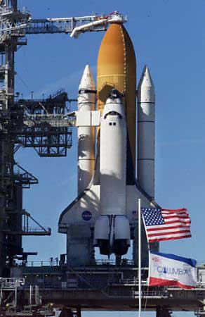多次延期发射的美国太空穿梭飞机“哥伦比亚号”，将会在太空飞行之时发现些什么？
我看见“哥伦比亚”将发现地球有光环的证据。现在我们已知只有土星与木星有光环。可是这是在我们“现在”这一个地球时间的所见。其实，每一个行星都有光环，有些是在过去有光环，有些是在我们的“未来”将有光环。有些的光环可由肉眼得见，有些光环只有天眼、慧眼可见，或由科学的仪器拍摄得到其隐形的光环。
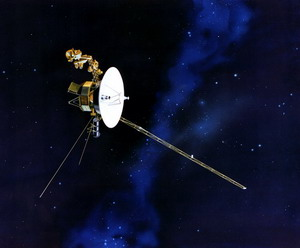
凡是有佛驻的星球都有光环，只是光环的构成不同，颜色光谱各异，冥王星也有光环的，冥王星是地藏王菩萨道场之一。若不信冥王星有光环，不妨到一九八六年，等到“航行者”宇宙飞船飞到冥王星附近拍发图像回来，就可相信我言不是太妄了。宇宙飞船拍发回来的电波符号，被太空署收到之后，由计算机处理，把那些数字符号翻译成颜色形状，我们将会看到冥王星的光环亦有千重之多，而且它们的光谱怪异，含蓄着巨量的辐射线，例如紫外线。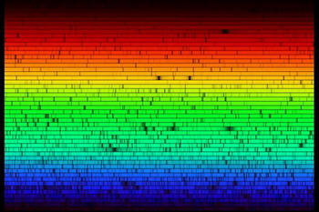若以太阳的光谱作为基准，光可分析为七色，人所皆知。七色之外，紫外线是肉眼所不见，红内线也非肉眼能见。紫外线是比较接近佛的金光的。我们不妨把佛光光谱绘出，圆圈的中心是无色的，佛首辐射出的佛光，是最短最微的光波（大光明）。凡人肉眼不可见，天眼、慧眼才可见，佛首外一重才是金光，光波略长，由淡金色开始，向外辐射，递增强度，变为强烈金光。金光之外围是一圈肉眼不可见的紫外光层，然后是紫光，然后是紫色光焰，再外是深紫，再外是绿光，再外是蓝光或红光。
一般凡夫，脑际时常闪现蓝光，可在静坐时见到蓝光闪闪，或绿光闪动，有些出家人与居士，修行甚深，可见到自己脑际的圆形金光之轮，那就是很接近三昧佛光之境了，真正到了极境，又无色无光。
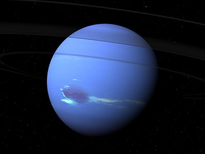冥王星的光环佛光，是紫外光与淡金为多，槽纹之间则是紫蓝，这是地藏王菩萨的佛光。肉眼难见，须待科学摄影印出才见的。
地球也是有光的，不过，现在我们只能见到两极的磁光。入定之后，“识”飞太空，可见到地球南、北极均放射火焰瀑布状的紫红色光焰，高达数百里，磁光从两极流出，地球周围都有五彩光焰。从物理上看，是原子的电磁作用，但是，并不那么简单，它有佛力的无形原动力在内，实在亦是佛的智慧之光之一。法华经说:“诸佛神力，智慧希有，放一净光，照无量国。”“尔时如来，放眉间白毫相光，照东方万八千佛主，靡不周遍。”这是佛光普照引起的磁光，太阳内的佛光，和其它星体的佛光是相连的，太阳是观世音菩萨道场之一（经论有载）。菩萨的佛光辐射。
过去无量诸佛，日月灯明佛，于过去无量无边不可思议阿僧祇劫，在宇宙中说大法，现出大光明之瑞，普照宇宙各“世界”（见法华经序品）。二十亿菩萨，乐欲听法，见此大光明，来听法的还有无数的阿罗汉，天子，四大天王，龙王，阿修罗王，及亿万眷属等……。
我们一般人很容易误认这些都是地球“世界”的人类。其实，法华经所讲的过去佛讲法、今佛讲法的听众，不单指地球人类生灵的，所指的是宇宙中各多层空间的各处“世”界和生灵，包括诸“天”的“人”，各“禅天”的“人”，有色界、无色界的“人”，即是宇宙中各空间的“智慧”和“能”的各种形式，并不是都是像我们这样的肉体的“人”，如果我们了解这些，就会明白法华经与其它佛经的许多难解的、看似神话的部分了。
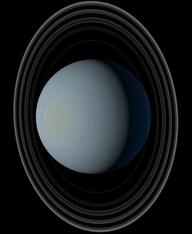佛是宇宙中的一种“大能”，是以无色、无形的形式存在的，存在于物质宇宙与多度的非物质宇宙之中，为度世人脱苦出厄而现肉身之相，因为世人大多数是不见实质的佛就怀疑不信，佛度地球人类时，显现人相，度化宇宙其它生命时，各循其相而显现。
那些不懂宇宙构成的人，不知宇宙的多度空间与多元，只知泥守固执于物质肉体的局限之内，他们就以其无知来乱批评佛教，指为迷信，又乱指佛经内的记载是“神话”“荒唐”“无稽”，此等人坐井观天，真乃“夏虫不足以语冰”！
甚至有些人，包括有些从前的佛教徒在内，竟然怀疑到法华经、华严经、楞严经都是后人伪造的“神话”，他们说龙树菩萨伪托从龙宫取得华严经，他们研究佛学时，一定要剥除佛陀的“神话”色彩外衣……这一类人的无知与愚昧，真是可笑又可怜！他们懂得了多少“科学”？也难怪，他们多半只知道一些落后的旧日科学公式，他们哪知道地球的物理学许多原理都已发现是不合理的，有很多只能适用于地球的物质空间，并不能适用于外层空间。这就等于幼儿园的孩子，无知地否定大学研究院士的科学论文。
佛经的“超自然”事实记载，实在都是以整个宇宙为对象的科学的记实，并非荒诞的“神话”！可以说，佛理是宇宙科学与莫理和人生其理的综合学问，绝对不是神权宗教，佛的超自然记载绝不可以删除！
佛陀的本生故事，并非神话，是真实的经验，现阶段的科学，已经发现了、证明了不少再世的例子，也正在努力探讨“再世”。佛陀是古佛再来度世的，我们为何要听从某些无知于宇宙科学的人的摆布而否定此一点？
当我们遇到佛经内的“超自然”记载之时，我们不妨多研究宇宙太空科学，就可以从中逐渐明白奥妙。千万不要盲从那些一知半解之徒的什么“二十世纪”的“科学时代”的否定见解。他们所知的只不过是教科书上的落后的化学物理定律，可知道，牛顿的万有引力定律现在也被最新的物理学家推翻了？因为它并不适用于宇宙！可知道？传统物理学说原子是物质的最小单位，这一观念已经被推翻了！原子之内更细微的是核子，核子之内，还可再分更细微的质点，质点再分下去，还有更细微，科学家无以名之，只好暂称之为“夸”（并非实质），而这还不是最细微，还可再分下去……最最细微之内，也有生机！岂非就是佛经讲的微尘之内亦有世界，华严经说微尘之内的世界，亦有无数亿万众佛在说法济度！这就说明了那些光环磁光，大阳磁力风暴……什么都有佛存在，有佛的能在推动！物质分到极极微细，就是能的形态，所谓物，不过是“能”的一种相，这些观念，佛经老早讲过了，现代日新月异的科学正在走向此一观念之中（大乘起信论说：“一切法无体可得。”)
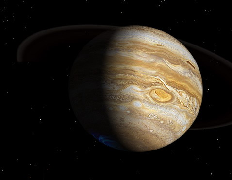无限僧祇劫前，古佛说法，大放光明，非物质的世界都有佛光大现，物质世界也有佛光大现。宇宙中的三度空间的星云漩系之中，银河系内的诸星系佛光闪闪，包括太阳系内的诸星佛光闪闪，亿亿万万诸佛在各空间都响应而佛光闪闪，土星，木星，冥王 星，地球……无不都现出佛光光环奇观！不单只是现出两极磁光而已。
地球的光环，在我们这一时代七、八十万年前已消失了，因为世人欲重恶孽多，不修行，不行善，不信因果，不信佛。又杀孽太多，又杀生以饱口腹美食之欲，奸淫邪恶，万恶难以尽述……那些孽气，如厕下粪气之上蒸，早都污染了上空了。翻开人类历史，从亘古以来，无论什么世代的“文明”，都是充满血腥气味，互相残杀，邪恶罪孽，如瘴气般布满了地球，大气各层上的原子空间，都充塞了污秽戾气，怎么还能见到佛光清净的美丽光环呢？不信吗？且看今日之喷发胶所散放的气体，已经在电离层上空布满了一层薄薄的污染层，使多少修行者的“灵识”被阻住，无法突破它进入外层空间的空间去，以为这是乱讲吗？我却见到这些情形的。也见到那些杀孽邪气的充斥成层，比喷发胶的气体层更加严重！
就当我讲的是梦呓吧，就斥我为“奇文共赏”吧！但是有人会知道我并非完全无根据乱讲的。
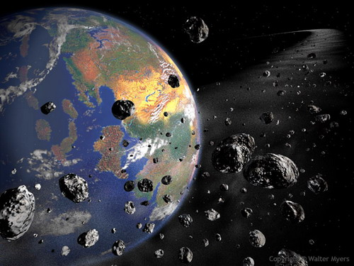地球从前是有十彩的千层美丽光环的，或许仅在七十万年到三千五百万年之前，光环仍然存在。心灵站在没有“时间”的字宙太空，可以看到地球昔日有光环的情景。它是在现今的赤道位置的上空，但并不是完全与赤道吻合，光环与赤道虽平行而有差异角度（与磁轴成直角），光环是美丽的，有很多层的淡淡佛光的金光。
说我是胡说吗？不妨也从科学观点来论一论，免得有人说我太“离谱”。
美国地质研究所（在加州缅路柏克Menlo Park），多年的搜集资料分析，认为地球在三千五百万年以前左右，气候曾有剧烈的变动，地质学家武尔夫博士（Dr. Jack Wolfe）说:“这种气候突变，可能使得冬天的气温降低了大约摄氏二十度（即华氏三十六度）之多，不过夏季的气温则似未有大变化，这种突变，似乎是由于地球转轴角度突然倾翻的结果。”
我以前在“内明”发表过说看见巨大的慧星挟着亿万光芒质点侵入太阳系，横扫而过，造成巨大波浪，把地球卷得翻转，南极变成北极，北极变成今之南极，东方变成今之西方，西方变成今之日出方向，这个巨大慧星的头，后来成为今之“金星”。
当然我的所见，未有科学的证明，可是这话在内明登过了三、四年后，今有上述的美国地质学家武尔夫公开提出上述的观点！另外又有一些地质学家陆续发现：很多地方的岩层，虽在同一地点，它们的磁场都各异，一些指向东北，一些指向西南，又一些指向正北，包括在旧金山附近的一些山地岩石，加拿大、纽西兰、澳洲、英国……各地均有此发现，碳十四放射探测各种异磁的各种沉积岩层年代，得知它们形成的先后，差不多在三千五百万年前形成的一批，与其后形成的另一批，都是磁向相反的！这些说明了，极有可能地球曾经有过地轴的突变，南变北，北变南，东变西，西变东！
即使是态度最保留谨慎的“国家地理杂志”，也曾刊出过有关岩层磁向相反的实例，推测可能是各大洲漂流转移了方向。照我所见：地轴曾经翻转，各大洲也正不断在漂移之中──北半球的美洲与亚洲向东航行，南半球的南美洲向西航行，非洲向东航行，大西洋地壳愈裂愈阔。
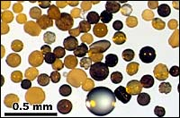美国狄勒维州大学，地质学系的两位地质学博士──格拉斯（B．P．Glass）与斯华德（M．J．Zwart）两氏，最近公布发现报告，他们在墨西哥海湾与卡里比海（西印度群岛）的海底钻取地层标本研究，发现地质含有很多玻璃般的小小珠子，每粒只有一公分的千分之一直径，这些微细的玻璃珠子是混合海底地层构成，从墨西哥湾一直到西印度群岛都有，汇成一条宽阔的地带，经过分别用碳十四鉴定，是同时代形成的，是在高热之下形成的。颜色从黑色到暗绿色，暗黄，浅红，白色……都有。
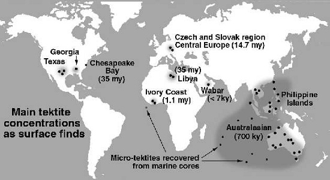
地质学家们又发现，不但上述地区有这些似为“玻璃”的小珠子，地球其它地区亦有──澳洲、捷克、非洲的科特迪瓦，加拿大东北角，格陵兰，斯堪特那维亚，都有发现。
碳十四放射测定鉴定报告称，澳洲发现的小珠子都属同一时代，约形成于七十万年之前，捷克的一百一十万年，科特迪瓦的一千五百万年，加拿大与美国得克萨斯州，乔治亚州的小珠子最老，约形成于三千五百万年以前。
这些一九八一年十一月份的地质学最新报告，不是我杜撰出来的。
地质学家们至今仍未知这些小小珠子从何而至？怎样形成？它们坚硬无比。
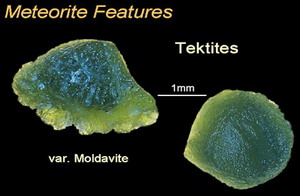依我所见，是彼时诸佛说法，地球出现有光环，就是佛光，促使曼陀罗华微舍利子降临大地！这些小珠珠，就是遗迹！
说我穿凿附会吗？那么，怎么解释这环绕全地球三个位置的地带都有小珠珠，如细小的冰雹形状？如珠又如花？
这就是我所见的，地球的光环的三个时期。第一期，在今之加拿大、美国纬度，后来地球地轴反转，又各大洲地壳漂移（照上述的方向），光环逐渐移到现今较南之纬度（德州与乔州上空），又再移到今之赤道附近上空（墨西哥湾卡里比海），又移到澳洲上空，我这里绘有三个图，请比较参考。
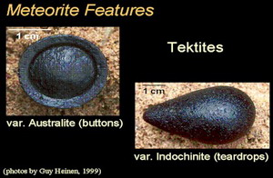这些光环的存在，佛法使天雨华天雨舍利，当然仍非现时科学家所能接受的观念，我没有硬说他们已同意我的说法，这都是我个人的心灵“识”所见的境界，你也可视之为胡说的，我自知我所见真实，我愿公开它供大家参考，外道要讥笑我，由得他们笑，我不怕人笑我！
地质学家们不知舍利子，自然不会知道那些小小冰雹状珠子，成亿成万，都是佛法佛力形成的舍利从天而降（从光环降下，光环含有无限无穷的这些小珠子，在不停流动飞行），说我乱讲吗？
多伦多大学地质学系的实验室，珍藏有从北美洲的“环带”取得的小珠子标本──一些是从拉巴多（加拿大东北角纽芬兰），一些是从安大略省著名的隰布里盆地取来的──经过用“阿冈四十”方法（Argon40-39）的处理鉴定，它们的年代都是三千五百万年前左右。多伦多大学的地质学系研究员巴谭里（R. Bottomley）的研究报告，推论这些小珠珠是从天而降的，像冰雹般降下的，我很兴奋能获得这些最新的科学报告，使我更加坚信我定中所见的地球有光环，有佛法，天雨“华”，天雨“舍利”！
当然，也有些科学家说，那些都是从火山喷出来的熔岩形成的。我倒要反问：几时见过火山岩浆形成小珠的晶莹玲珑？读者你们可见过？
持该说的科学家们，理由是：该等珠子，需千度以上高温才能形成。
我要反问：那一个火山喷出的？这么均匀分布成三条纬度不同的环带？火山熔岩有会分布得这么平均？连我这不懂科学的人也想像不出来火山会喷发得那样的！火山灰、火山烟确会随着气流环游全球，但是，地球的自转，在北半球促成气流波状的向东前进，在南半球的成波状向西而走，这些都是常识！火山灰怎可能飞成平均的环状围绕地球？难道气流是单纯的定向吗？连非学科学的我也知道：气流的推进，有主流，有分流，有回流，有逆流，东风里，未必都是东风，高层是东风，低层可能是西风！
因此，火山喷成玻璃小珠之说，不攻自破！
当然，我讲的，不是没有缺点的，到底我不是专业科学家，我的科学知识太少，不足以列举足够的证据来支持我定中所见的景象，你就当是我的“奇文共赏”又一章吧！（附四图）
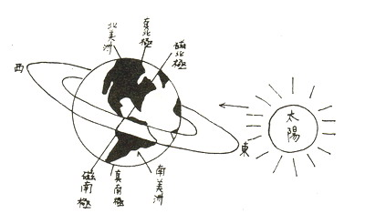图一：大约三千五百万年前，地球的南美洲南方尖端和南极洲是北极，而今之北美洲加拿大与格陵兰、西伯利亚，都是在南极。地球受到无比巨大的入侵慧星横扫而过，波浪力量使地球的轴心突然翻转，于是北极转向下方，南极转向北方，南北互易，东西互换。同时各大洲的地壳不断在漂流航行。本来聚在一起的非洲与南北美洲、格陵兰、欧洲，逐渐散开裂开，现出大西洋。此一时期的佛光光环，凌空届临于今之加拿大与美国，及西伯利亚的上空，光环的微细舍利珠子降落于该等地区，成为特有之环带。
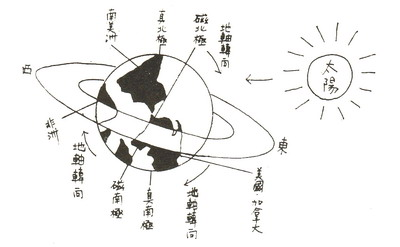图二：大约七十多万年前，北美洲北航至接近现在的位置，光环临于今之南美洲北端及澳洲上空，舍利小珠降下该地区。
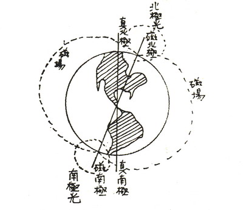图三：磁北极与磁南极之间，有无数的磁波连接，造成磁场（此处只画出单线代表）。磁南极、磁北极均有“极光”，是静电磁场的作用，一切均有亿万无数的质点，每一质点之内都有诸佛的原动力存在，实乃佛光。
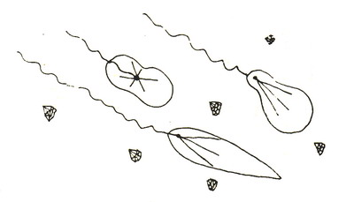图四：土星与木星的光环之内，有亿亿万万无限的细小舍利质点，是比短波更细小的，每粒不到一公分的数千分之一，它们是粒状的具有辐射“能”的一种“相”，有些像珍珠，有些像宝石，有些像水晶粒子，每粒内部有花瓣状的辐射形状。
网注：有关科学家发现光环的时序，依列如下：
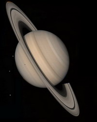
土星的光环 Rings of Satur
1610年，伽利略用望远镜观察土星，发现土星的圆面两侧有好像人耳朵一样的东西，并把此发现记录在文献中——“土星边上有耳朵”。由于当时望远镜的分辨率太低，伽利略没有更深入去观察，因此错过了土星有光环这一重大发现。发现土星光环这一殊荣最终颁给了荷兰科学家惠更斯，他于1659年发现环绕着土星的是一个扁平的圆环。
http://magazine.sina.com/chinanewsweek/20070820/2007-08-26/193738647.shtml
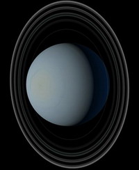天王星的光环 Rings of Uranu
据英国广播公司报道，传统观点认为，天王星环是在1977年的一次实验中被发现的。最近一种新的理论认为，在公认的发现日期之前的180年 (1789年)，天文学家可能就已经发现了天王星周围的光环。
http://tech.icxo.com/htmlnews/2007/04/20/1038686_0.htm
木星的光环 Rings of Jupiter
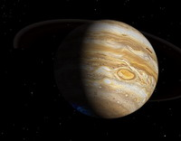 1979年“旅行家”( Voyager 1 ) 太空船飞越木星，才发现木星也有一圈外光环，但这道光环非常的薄，在地球上即使用最好的望远镜也看不到。
http://residence.educities.edu.tw/atom/taco/note33.htm
地球的光环
The Vailan or annular theory : a synopsis of Prof. I.N. Vail's argument in support of the claim that this earth once possessed a Saturn-like system of rings 1892
The terminal Eocene event: formation of a ring system around the Earth? 29 May 1980
Rings around the Earth: A clue to climate change? September 11, 2002
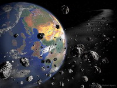有极少的科学家心里明白，在地球早期历史中，我们的行星也有一个由岩石碎片组成的环。美国新墨西哥州立大学的科学家 ─ Peter J. Fawcett 与能源部 Sandia 国家实验室的 Mark B.E. Boslough 认为，从地质学的角度来看，大约在三亿五千万年前，最近一次的碰撞期中，地球的确可能有一圈短期性的光环。这两位科学家推测，地球的环持续存在了大约十万至数百万年之久，这也许可以解释地质记录中气候型态的改变。
http://tw.knowledge.yahoo.com/question/?qid=1005032407552 海王星的光环 Rings of Neptune
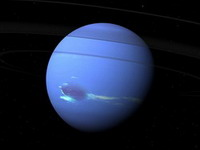海王星已发现的光环有四个，都是由“航行者二号”( Voyager 2 )太空船在1989年飞过时发现的，科学家相信海王星的光环是比较年轻的。 http://universehk.liful.com/0.6.4/solar.php?id=9 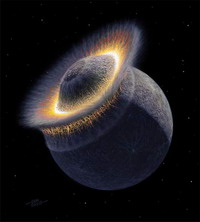 冥王星或许会形成的光环
Pluto Might Have Rings 22 February 2006
据新一期英国《自然》杂志报道，曾在去年利用“哈勃”太空望远镜发现冥王星两颗小卫星的美国科学家最近发现，太空中的物体与这两颗卫星相撞，会在冥王星的周围定期形成微弱的光环。科学家在最新的研究报告中说，他们发现因为这两颗卫星质量太小，太空中的物体与之相撞后会围绕冥王星形成微弱的光环。科学家说，这是第一次在大型固态行星周围发现光环。
http://www.space.com/scienceastronomy/060222_pluto_moons.html 永忏楼随笔之四十九 ──《地球千层光环失踪之谜》
原载香港《内明》第119期：1982年02月1日
书名：禅定天眼通之实验
作者：冯冯
出版：天华出版事业股份有限公司